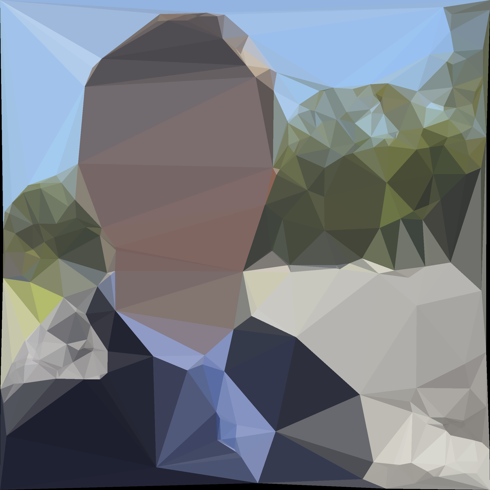

About

> Well hi there!
This page is an experiment: an up-close, real-time view of a black hole up top, and the rest of the site below. Everything past this point is example content modeled on the main site.
I'm Tiernan Lindauer — I build things and write about them. In 2024 I founded LindauerAI, an ed-tech startup that built a dual-AI learning platform (Gyro for students, CA for teachers).
Start with My Motivation, then Projects and Research.
Selected Work
- LindauerAI — dual-AI learning platform; founder & engineer.
- Research — cost-based policies for narrative observation of unpredictable events.
- Projects — interactive experiments in physics, graphics, and systems.
- Writing — essays on motivation, learning, and building.
Words I Live By
…
Live Data
Elsewhere
- LindauerAI — the ed-tech startup and its story.
- Essays — longer-form writing.
- Reading — what I'm reading and recommending.